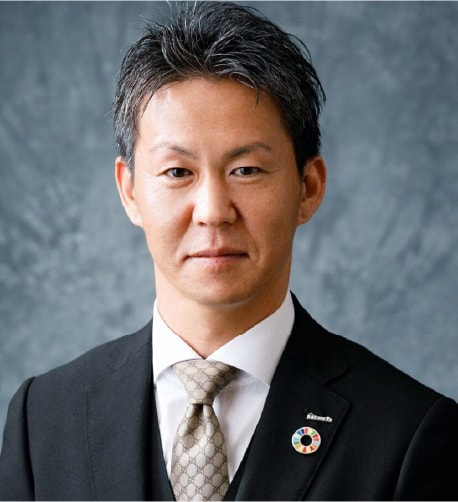

団体概要
団体概要
理事長挨拶
⽇本のカーボンニュートラルの
実現にむけた基盤作りを。
2020年10⽉、⽇本は「2050年カーボンニュートラル」を宣⾔し、2030年には温室効果ガスを13年比46％の削減の目標が設定されました。同年5月には「改正温対法」が成立し、対象企業にはCO2排出量の報告義務ができるなど、 日本国内でも「脱炭素」を企業に求める流れが急加速しています。中小・零細企業には関係ない話、と認識している経営者も多いかもしれませんが、今後大企業はサプラーチェーン全体でのCO2削減を目指していくことになり、取引先も自動的にCO2排出量の少ない企業が選ばれていくことが明白なことからも中小・零細企業にとっての脱炭素経営は企業の存続をかけた喫緊の課題となっています。
いよいよ他人ごとでは無くなってきた「企業のCO2削減」ですが、中小・零細企業はヒト・モノ・カネ・情報が乏しく、専任者を就けれない、具体的に何をすればいいのか分からない、 お金をかけれない、事がほとんどであると想像します。当協会は、そのような中小・零細企業の脱炭素経営推進のお手伝いをさせて頂くことで、⽇本のカーボンニュートラルの実現にむけた、地域から、中⼩零細企業によるボトムアップ型の基盤作りを実行して参ります。

一般社団法人
日本カーボンニュートラル協会
理事長
寺尾 忍
目 的
当法人は、日本のカーボンニュートラル・脱炭素社会の実現に向け
「地域から」「中小企業による」「連携イノベーション」を起こす
ボトムアップ型の基盤づくりのために、次の事業を行います。
Collection
中小企業における
脱炭素取り組み事例の
収集・発信とマッチング
Seminar
カーボンニュートラル
に関する経営セミナー
の開催
Certification
カーボンニュートラル
牽引企業の認定
Award
ジャパンカーボン
ニュートラル
アワードの実施
Proposal
脱炭素エネルギーの
あり方に関する
提言事業
Trading
中小企業による
排出権取引に関する
提言事業
Others
その他、当法人の目的を
達成するために
必要な事業
団体概要
- 名 称
- 一般社団法人
日本カーボンニュートラル協会
- 設立年月
- 令和3年7月
- 所 在 地
- 福井県越前市本保町
第8号5番地の１
沿 革
- 2021.07 （令和3年）
- 一般社団法人 日本カーボンニュートラル協会 設立
- 2022.03 （令和4年）
- カーボンニュートラル宣言企業を公益社団法人日本青年会議所と連携して募集
- 2022.07 （令和4年）
- カーボンニュートラル・アドバイザー制度をプレオープン
組織図・役員
一般社団法人
日本カーボンニュートラル協会。
【JCNA】

役員等名簿
理事長・代表理事

理事

理事

理事

理事

| 役職名 | 氏 名 | 現職名等 |
|---|---|---|
| 理事長・代表理事 | 寺尾 忍 | テラオホールディングス㈱ 代表取締役社長 |
| 理事 | 西岡 徹人 | 三承工業㈱ 代表取締役 |
| 理事 | 石田 英誉 | ㈱フローハイド 代表取締役 |
| 理事 | 鎌田 長明 | 鎌長製衡㈱ 代表取締役社長 |
| 理事 | 竹田 哲之助 | ダイサン株式会社 代表取締役 |
| 監事 | 須山 裕史 | 一般社団法人 SDGsプラットフォーム 専務理事 |
| 監事 | 岡部 栄一 | ㈱ヤマヲ 代表取締役社長 |
会員企業
会員企業のロゴから各企業の
ホームページにリンクします。